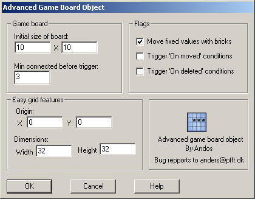

Setup box
Introduction to AGBO
-
Ways to display bricks
-
The setup box
-
Extra looping

Initial size of the board
Here you can enter the intitial size of the AGBO board. You can change it later from the event editor.
Minimum connected bricks
This sets the minimum connected bricks a system must have before AGBO triggers "On found connected" conditions.
Origin for grid
Here you can change the origin for the easy grid features of AGBO. The values you enter is MMF X and Y coordinates. This is the top left corner of your board.
Dimensions for cells
Here you can change the width and height of the cells used when using the easy grid features of AGBO.
Move fixed with bricks
When this option is turned on and you do any actions that move the bricks in AGBO, the fixed values you have stored in the board will move along with the bricks. Read more in the general tutorial about displaying the bricks to find out more..
Trigger 'On moved' condition
When this option is turned on, the condition "On brick moved" will be triggered when any brick has moved. This is especially usefull if you have active objects representing the AGBO board visually and wants to get notified when an object should be moved.
Trigger 'On deleted' condition
When this option is turned on, the condition "On brick deleted" will be triggered when any brick has been deleted by any of the actions that could cause bricks to be deleted such as "Delete horizontal line", "Delete vertical line", "Delete brick", "Move brick" (only if you overwrite
About
Extension made by Anders Riggelsen (Andos)
Bug reports to:
anders@pfft.dk